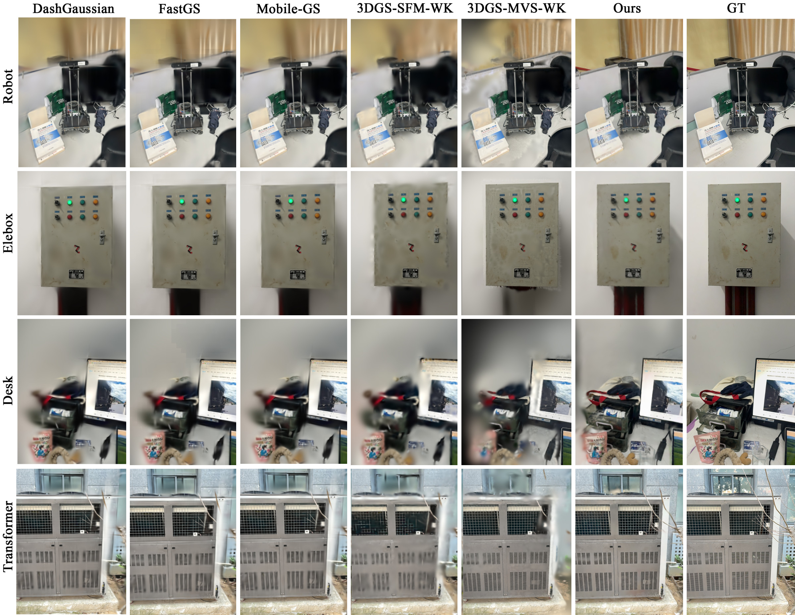

Geometry construction
Refine mobile poses and construct a filtered dense prior from handheld captures under a mobile resource budget.

3D Gaussian Splatting offers real-time rendering, but its training commonly relies on offline geometry, long-horizon optimization, and memory-intensive differentiation. PocketGS formulates post-capture static-scene training as resource-constrained finite-horizon optimization, and completes geometry construction, Gaussian initialization, and 3DGS optimization on a commodity smartphone. The approach combines a geometry-informed warm start with reference-consistent mobile gradient execution.
Refine mobile poses and construct a filtered dense prior from handheld captures under a mobile resource budget.
Initialize surface-aligned anisotropic Gaussians from local geometry so the model starts with useful spatial support.
Replay compositing interactions and scatter gradients to canonical parameters without CPU intervention.
On challenging mobile scenes, PocketGS preserves texture and thin structures while reconstructing regions that are difficult for generic MVS initialization, including low-texture and specular areas.

@article{pocketgs2027,
title = {PocketGS: High-Fidelity On-Device Training for 3D Gaussian Splatting},
author = {Guo, Wenzhi and Fang, Guangchi and Yang, Shu and Wang, Bing},
year = {2026}
}